Flight Parameters¶
Zakładka jest przeznaczona do definiowania parametrów nalotu fotogrametrycznego.
Camera¶
Panel wyboru i zarządzania kamerami. Wybieranie odbywa się za pośrednictwem listy rozwijanej.
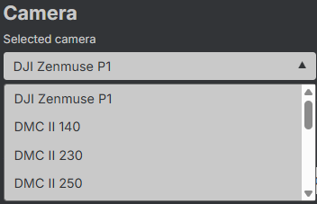
Inspekcja kamery¶
Przycisk 🛈 umożliwia wyświetlenie informacji na temat wybranej kamery.
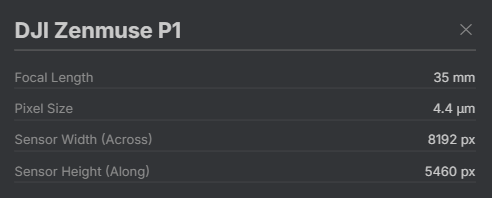
Dodawanie kamery¶
Przycisk + pozwala dodać nową kamerę.
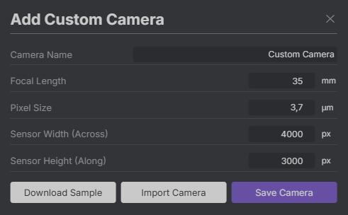
W pojawiającym się oknie dostępne są trzy opcje:
Download Sample- pobiera plik z przykładową poprawną definicją kamery. Zawartość pliku jest ustalana na podstawie aktualnie wybranego sensora. Przykładowy plikJSON:
{
"name": "DJI Zenmuse P1",
"focal_length": 0.035,
"sensor_size": 0.0000044,
"pixels_along_track": 5460,
"pixels_across_track": 8192
}
-
Import Camera- umożliwia wczytanie definicji kamery z pliku. Zaleca się uprzednie pobranie wzorca z użyciemDownload Sample, edytowanie zawartości w notatniku, a następnie wczytanie jej do aplikacji. -
Save Camera- umieszcza sesnor na końcu listy rozwijanej i automatycznie ustawia go jako wybrany.
Flight¶
Sekcja dotycząca azymutu nalotu, pokrycia podłużnego i poprzecznego oraz sposobu definiowania rozmiaru piksela terenowego.
Strip Direction¶
Suwak pozwala na wybór azymutu nalotu.
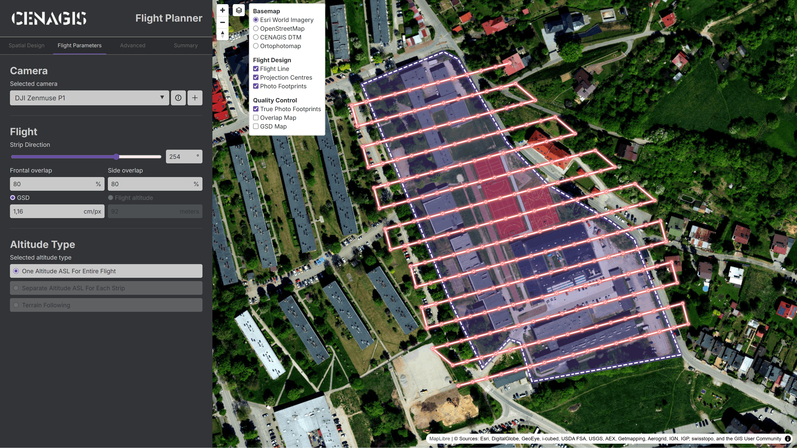
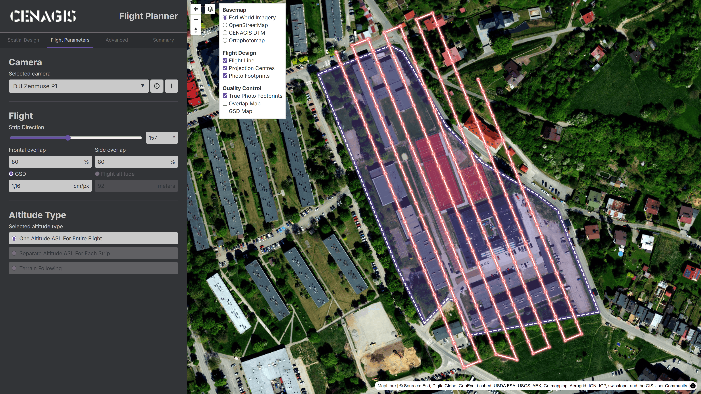
Frontal / Side Overlap¶
Pokrycie podłużne (Frontal Overlap) wpływa na liczbę zdjęć w jednym szeregu, zaś pokrycie poprzeczne (Side Overlap) wpływa na liczbę szeregów.
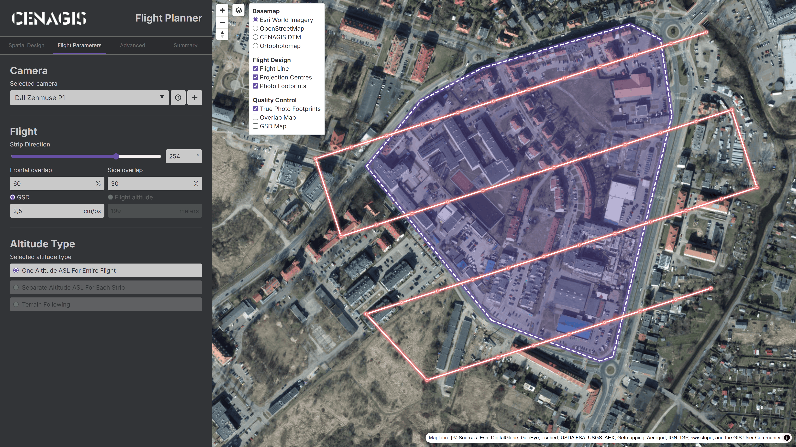
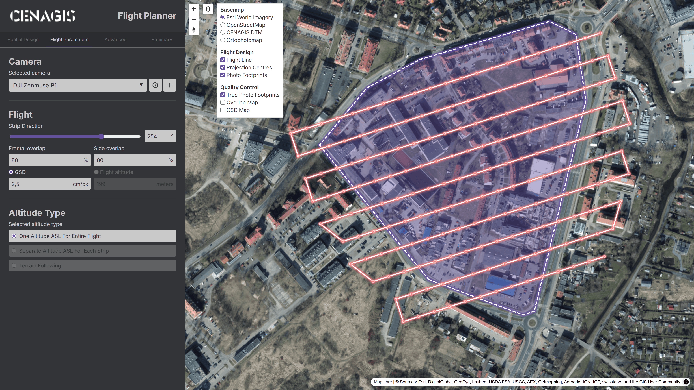
GSD / Flight altitude¶
Wzajemnie zależne pola umożliwiające określenie terenowego rozmiaru piksela bezpośrednio (poprzez jego ustawienie – GSD) lub pośrednio (poprzez zmianę wysokości nalotu – Flight altitude). Pola przeliczają się dynamicznie z wykorzystaniem parametrów ustawionej kamery.
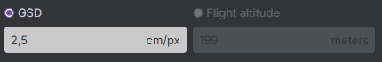
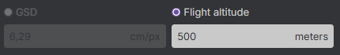
Precyzja GSD
Ze względu na fakt, iż wysokość jest zaokrąglana do pełnych metrów, przełączanie może spowodować zmianę precyzji wartości GSD.
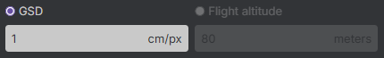
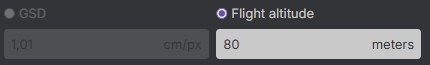
Altitude Type¶
Sekcja obsługuje trzy możliwe tryby wysokości:
- One Altitude ASL For Entire Flight – cały nalot odbywa się na jednej wysokości bezwzględnej. Zależy od minimalnej i maksymalnej wysokości terenu, którą można podać jako parametr zaawansowany. Opcja najmniej kosztowna obliczeniowo, przez co – najszybsza.
Minimalna i maksymalna wysokość terenu
Minimalna (Lowest Terrain Elevation) i maksymalna wysokość terenu (Highest Terrain Elevation) to parametry zaawansowane wyznaczanane automatycznie na podstawie numerycznego modelu terenu, można je zdefiniować ręcznie w zakładce Advanced.
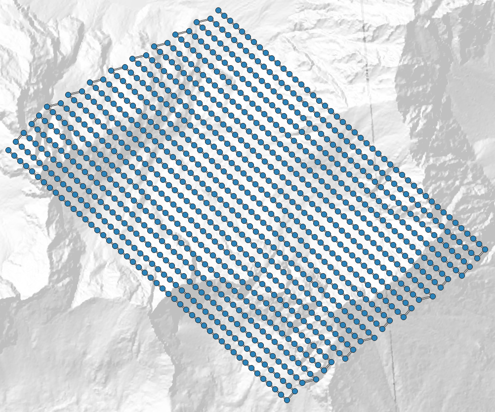
Separate Altitude ASL For Each Strip– każdy szereg ma wyznaczoną stałą wysokość w zależności od ukształtowania terenu. Opcja bardziej kosztowna obliczeniowo.
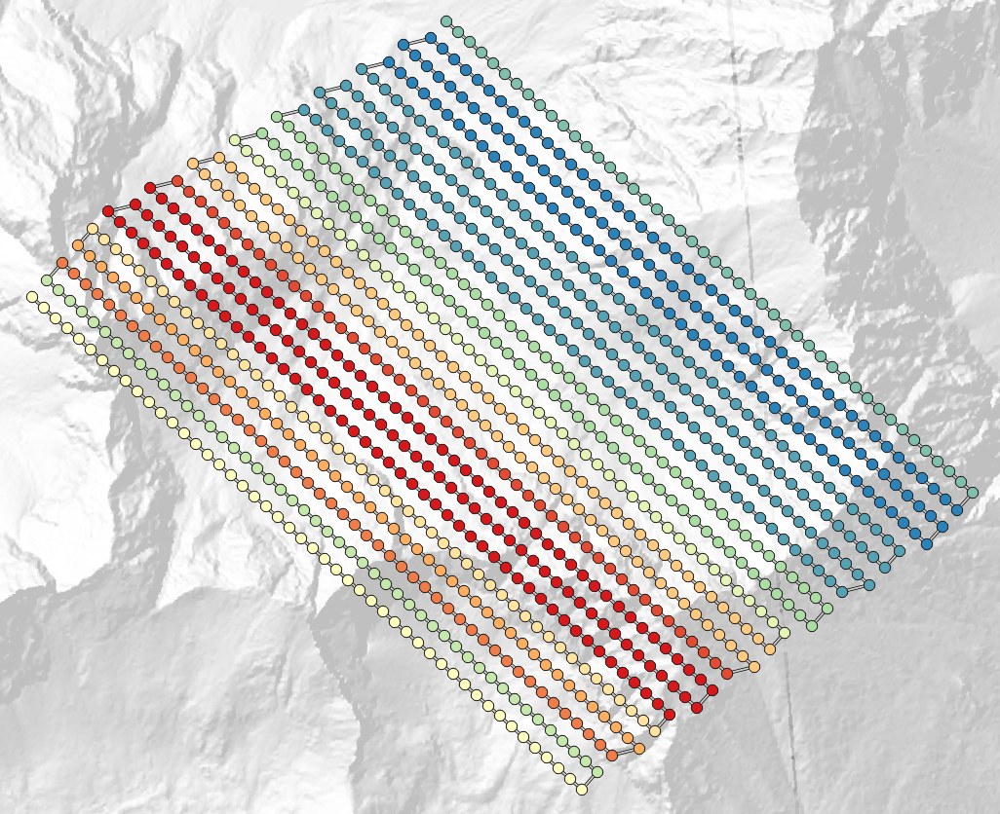
Terrain Following– każdy środek rzutu ma niezależnie wyznaczoną wysokość, tak aby utrzymywać stałą odległość od ziemi. Opcja najbardziej kosztowna obliczeniowo, wykonująca się najdłużej, ale dająca najlepsze rezultaty.
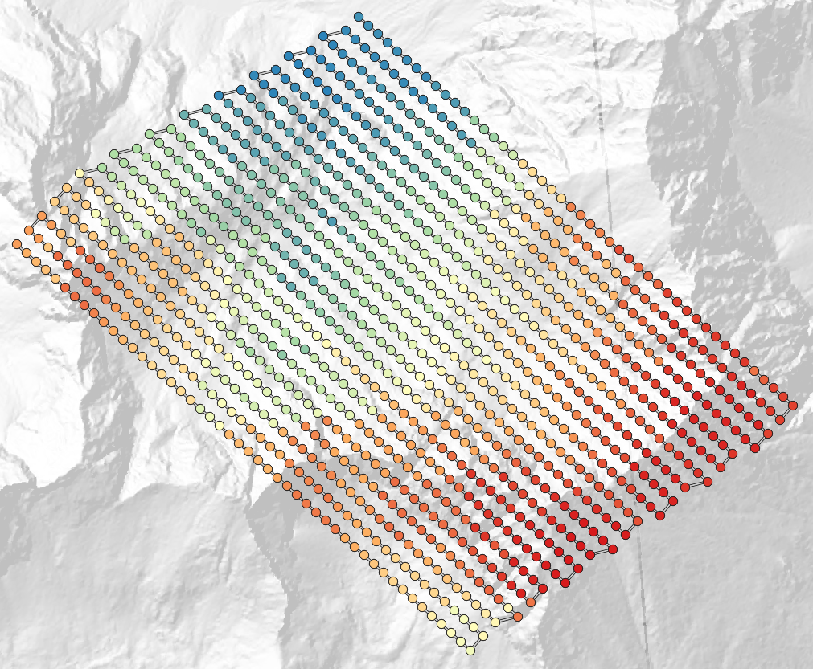